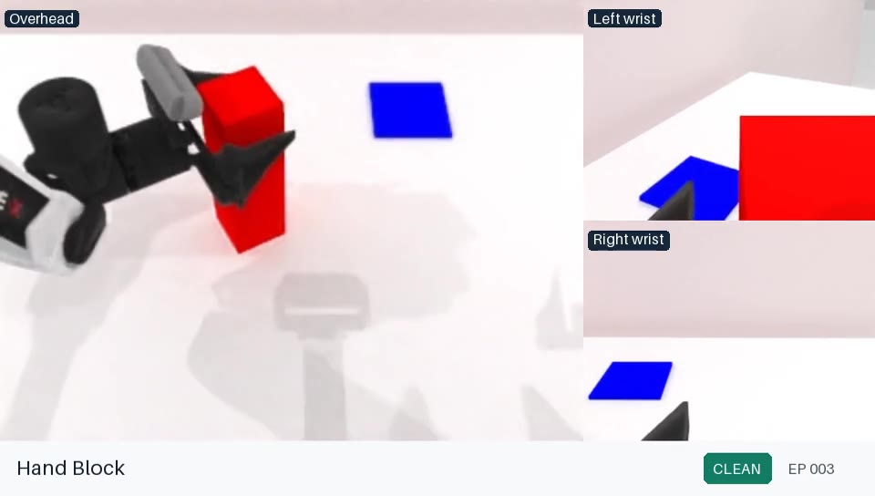
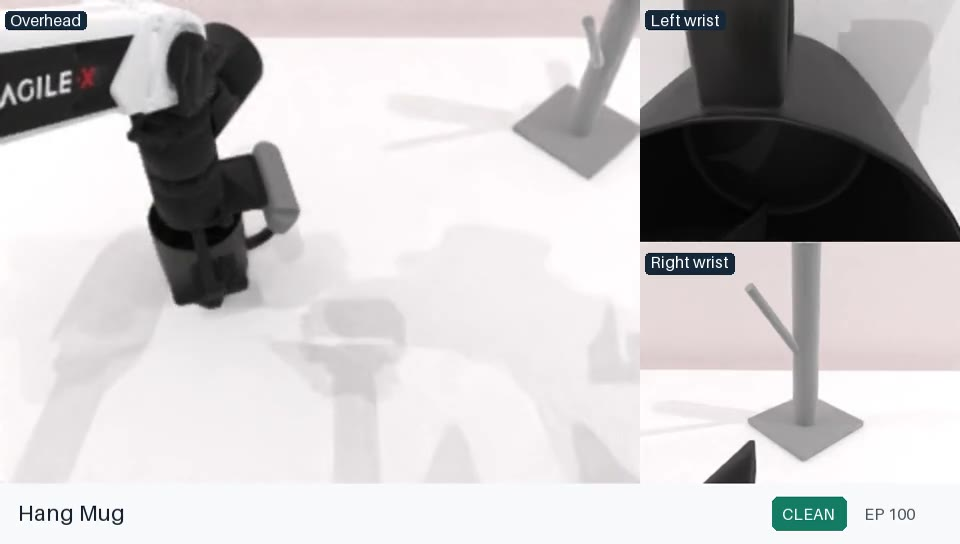
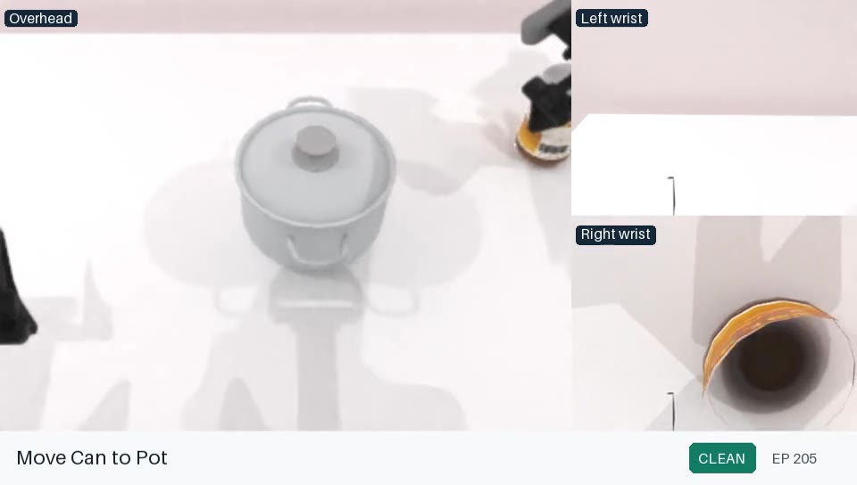
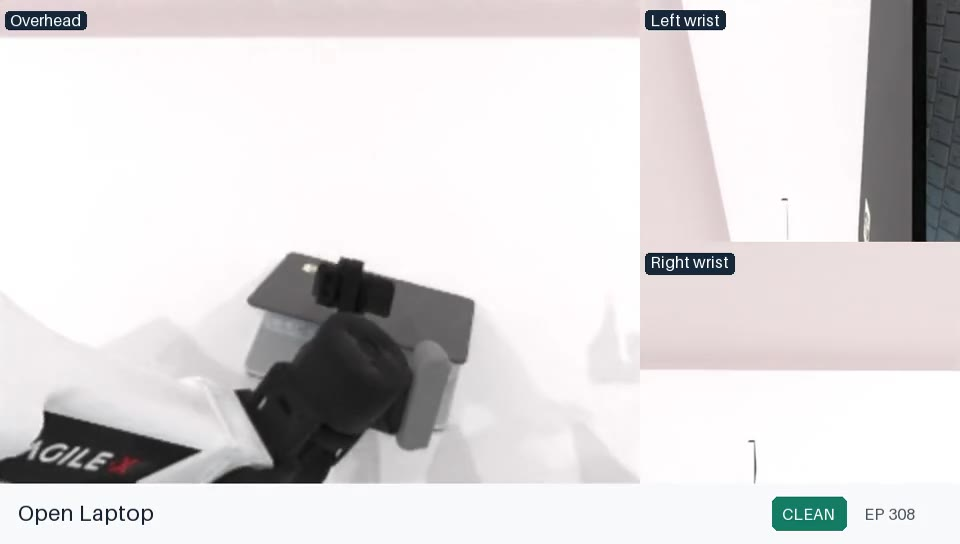
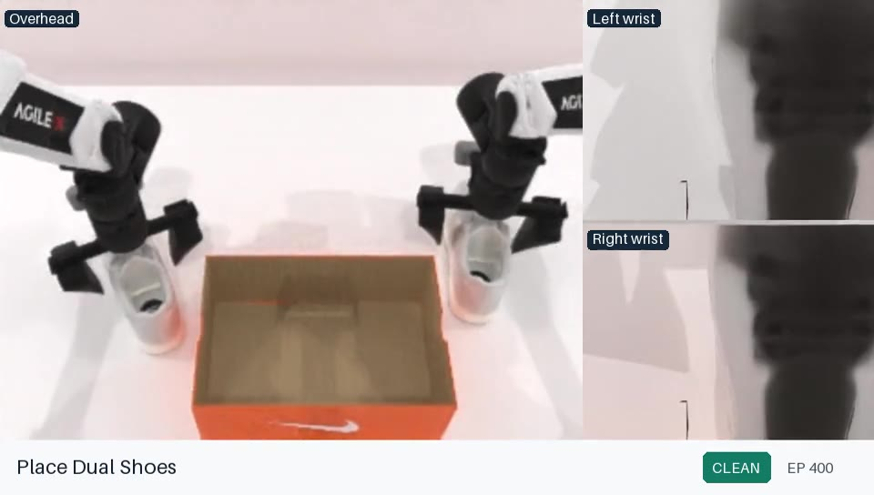
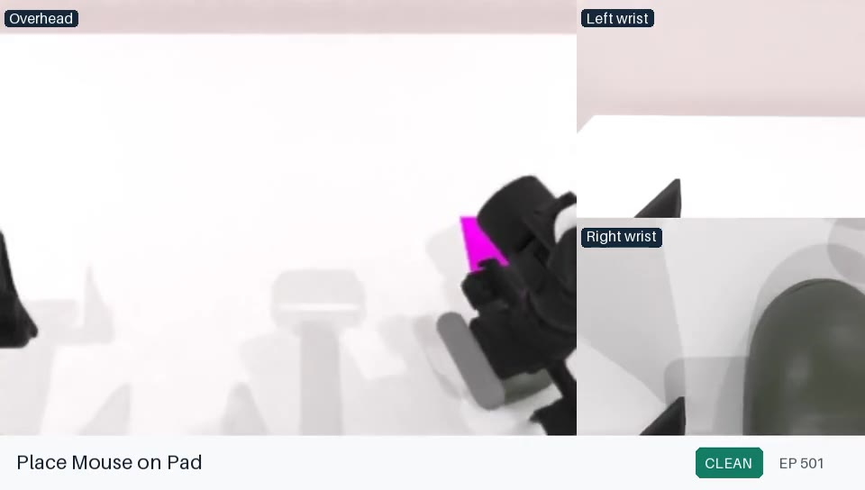
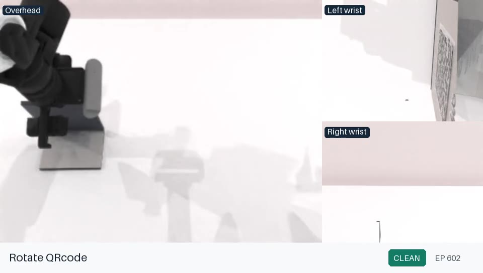
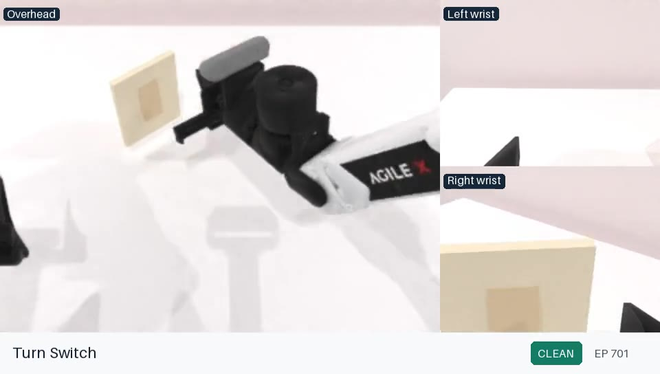

Simulation benchmark
Reproduce RoboTwin
Train KinRT on the 800-episode RoboTwin set, serve a concrete checkpoint, and evaluate all eight tasks under clean and randomized conditions without mixing sessions or output directories.
Set the reproduction boundary
policy/ contains the single KinRT implementation, and script/ contains the RoboTwin evaluation overlay. The release does not contain the complete simulator, task assets, or the 800-episode training dataset.
Apply the unified overlay once, select either kinrt_full or kinrt_lora, and record that config with every checkpoint and evaluation.
| Run | Source | Config | Initialization |
|---|---|---|---|
| KinRT FULL | policy/pi05 | kinrt_full | PI0.5 dense base |
| KinRT LoRA | policy/pi05 | kinrt_lora | PI0.5 base plus LoRA |
Prepare a compatible RoboTwin checkout
Install RoboTwin 2.0 and its simulator assets according to the upstream project. Before applying the policy overlay, verify that the checkout contains envs/, task_config/, script/, and the embodiment assets required by the selected tasks.
export ROBOTWIN_ROOT=/work/RoboTwin-kinrt
test -d "$ROBOTWIN_ROOT/envs"
test -d "$ROBOTWIN_ROOT/task_config"
cp -a /path/to/KinRT/policy/. "$ROBOTWIN_ROOT/policy/"
cp -a /path/to/KinRT/script/. "$ROBOTWIN_ROOT/script/"
cd "$ROBOTWIN_ROOT/policy/pi05"
uv sync --frozenFULL and LoRA use this same overlay. Use separate experiment names and output directories, and preserve the upstream RoboTwin commit and simulator asset version in the experiment record.
Import the task module, load one task config, and reset one episode without loading a policy. Simulator failures must be resolved before policy debugging.
Verify the 800-episode dataset
The reported comparison uses 162,545 frames from 800 episodes. The active config expects three images, state, action, and prompt fields after repacking.
| Model input | LeRobot field in the reported config |
|---|---|
images.cam_high | observation.images.cam_high |
images.cam_left_wrist | observation.images.cam_left_wrist |
images.cam_right_wrist | observation.images.cam_right_wrist |
state | observation.state |
actions | action |
prompt | Task text via prompt_from_task=True |
Replace the placeholder repo_id="demo_mixed_repo" with the local LeRobot dataset identity. Verify episode count, frame count, field shapes, action units, and global index coverage.
Compute norm stats and train
Generate and verify the K=4 supervision using the KinRT method procedure, then point the selected config to the local dataset, labels, base weights, and writable output. Keep one config name from normalization through serving.
cd "$ROBOTWIN_ROOT/policy/pi05"
uv run python scripts/compute_norm_stats.py --config-name kinrt_full
uv run python scripts/train.py kinrt_full --exp-name robotwin_kinrt_fullcd /work/RoboTwin-kinrt-lora/policy/pi05
uv run python scripts/compute_norm_stats.py --config-name kinrt_lora
uv run python scripts/train.py kinrt_lora --exp-name robotwin_kinrt_loraThe audited settings are 10,000 steps, global batch 32, EMA disabled, supervised router coefficient 0.05, and inverse-square-root balanced sampling. FULL uses one FSDP device in the retained config; LoRA uses two. Report any resource override.
Evaluate one immutable checkpoint
Create deploy_policy.yml from the included example. Resolve every placeholder before starting the server.
policy_name: pi05
task_name: <task-module-name>
task_config: <clean-or-random-config>
test_num: 100
train_config_name: kinrt_full
model_name: robotwin_kinrt_full
checkpoint_id: 10000
checkpoint_dir: /checkpoints
model_server_host: <reachable-server-host>
server_bind_host: 0.0.0.0
port: 8001
eval_result_root: ./eval_result
router_info_root: ./eval_result/router_info
record_router_info: trueLocal evaluation
cd "$ROBOTWIN_ROOT/policy/pi05"
bash eval.sh <task_name> <task_config> kinrt_full \
robotwin_kinrt_full 0 0Remote evaluation
cd "$ROBOTWIN_ROOT/policy/pi05"
bash serve_remote_model.sh deploy_policy.ymlcd "$ROBOTWIN_ROOT/policy/pi05"
MODEL_SERVER_HOST=<reachable-server-host> \
bash eval_remote.sh <task_name> 0The server creates an independent policy session for each socket connection. LORA additionally uses an explicit eval_done acknowledgment, a 300-second client socket timeout, episode-level exception isolation, and checkpoint identifiers in responses. These are robustness differences, not changes to KinRT.
Complete the 16-condition task matrix
Resolve the exact task module and task-config filenames from the compatible RoboTwin checkout. The paper reports these eight task labels under both clean and randomized conditions.

Hand block
Hang mug
Move can
Open laptop
Place shoes
Place on pad
Rotate QR code
Turn switch100 requested trials per task with a fixed checkpoint and recorded seeds.
100 requested trials per task using the corresponding randomization config.
Transport failure is terminal; valid simulation or inference failures count as failed episodes.
Count results on disk and do not trust a partial client exit as a completed evaluation.
Report enough information to audit the result
- FULL or LoRA config name, source commit, and all config overrides.
- Dataset identity, frame count, label digest, norm-stat asset ID, and base checkpoint.
- Fine-tuned experiment name, checkpoint step, and parameterization.
- RoboTwin commit, task module, task config, simulator assets, condition, and seed set.
- Requested, completed, successful, failed, and transport-aborted episode counts.
- Evaluation result directory and router telemetry directory.
If an evaluation is resumed, preserve the original seed/result records and document the merge rule.